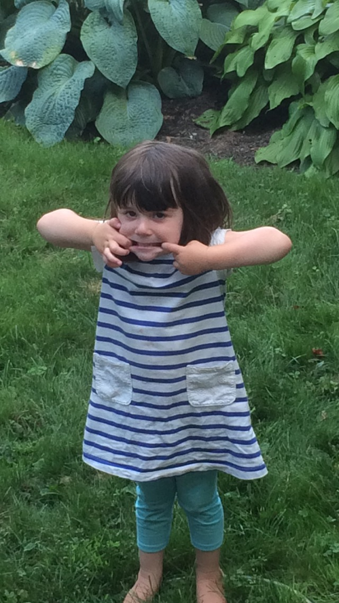

When I was eleven years old my family and I moved to Ann Arbor, Michigan. I was in school here for the fourth and fifth grade at an elementary school called Bach. Michigan wasn't particularly a place that held too much importance to me, becuase it was short and temporary, Although it was time and place when my little sister was born.